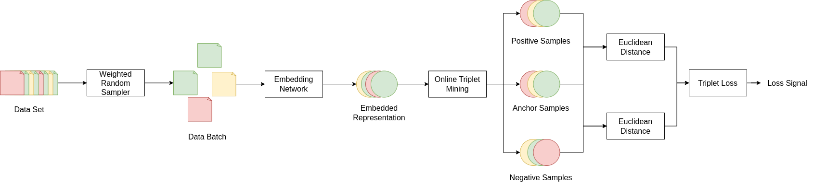

|
Jack Wilkie
I am concluding my PhD at the University of Strathclyde. My PhD research investigates the application of representation learning to a range of cybersecurity applications such as network intrusion detection and malware classification, with a special focus on contrastive learning, anomaly detection and open set recognition. Currently, I am researching out of distribution detection and the application of differential geometry.
Email /
CV /
LinkedIn /
Github
|

|
Research
My work focuses on the application of representation learning to cybersecurity. I'm interested in extending my algorithms to a wider range of domains.

|
Contrastive Self-Supervised Network Intrusion Detection using Augmented Negative Pairs
Jack Wilkie, Hanan Hindy, Christos Tachtatzis, Robert Atkinson
Proceedings of the IEEE Conference on Cyber Security and Resilience (CSR), 2025
abstract
Traditional contrastive self-supervised learning can be viewed as learning a mixture of distributions where training samples are centroids and their augmented views are distribution samples. This work presents a modification which allows the model to learn a single coherent distribution of network benign traffic in embedded space allowing for better performance and more efficient inference.
|

|
Signal Based Malware Classification using 1D CNNs
Jack Wilkie, Hanan Hindy, Christos Tachtatzis, Robert Atkinson
Springer Cybersecurity, Accepted, In Press
abstract
Byteplot images are a widely used binary representation for applying computer vision techniques to malware classification. This work demonstrates that using 1D signal representations reduces information loss, resulting in improved classification performance. Additionally, a framework is proposed that adapts existing 2D image classifiers for use on 1D signal data, achieving state-of-the-art performance on the MalNet dataset.
|

|
A Novel Contrastive Loss for Zero-Day Network Intrusion Detection
Jack Wilkie, Hanan Hindy, Craig Michie, Christos Tachtatzis, James Irvine, Robert Atkinson
Under Review
Machine learning has become a dominant paradigm in network intrusion detection, yet models remain vulnerable to Zero-Day attacks. While supervised approaches perform well on known attack classes, they often fail to generalize to previously unseen threats. Conversely, anomaly detection methods can detect novel attacks but typically suffer from unacceptably high false positive rates. This work introduces a novel contrastive loss function that enables generalization to zero-day attacks, despite being trained on known malicious classes. The result is improved performance in both closed-set and open-set evaluation.
|
|

|
Few-Shot Network Intrusion Detection using Online Triplet Mining
Jack Wilkie, Hanan Hindy, Christos Tachtatzis, Miroslav Bures, Robert Atkinson
Under Review
This work proposes a few-shot network intrusion detection system that combines online triplet mining with a k-nearest neighbors (KNN) classifier. The model learns feature representations independent of the labels’ marginal distributions, enabling robust generalization from limited data. The KNN classifier then reintroduces class-specific structure, resulting in an effective detector with a low false-positive rate in few-shot scenarios.
|
|
Design adapted from source code available here.
|
|